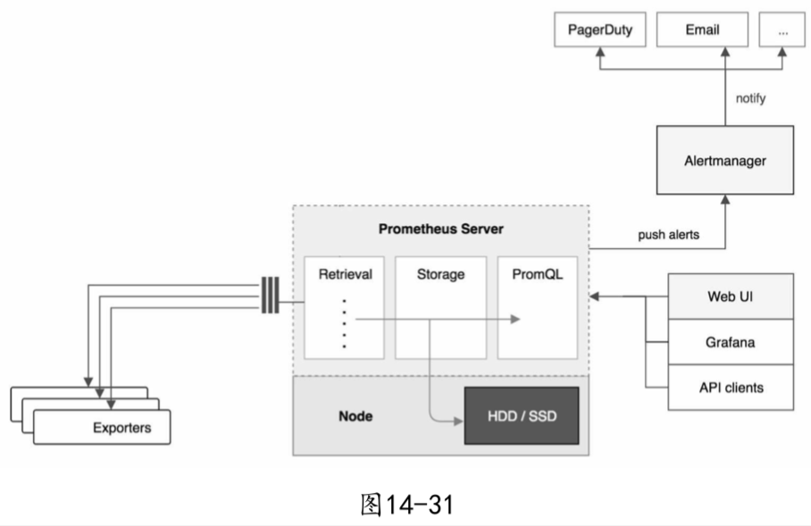
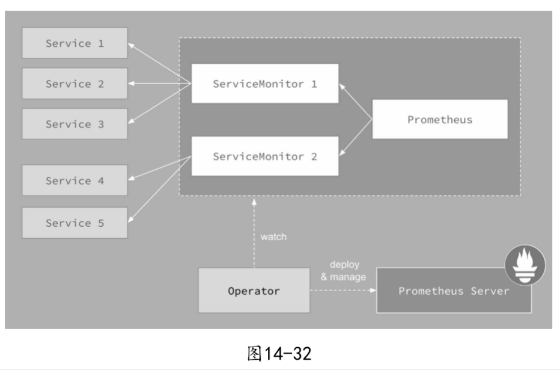

| Title | Date | Modified | Category |
|---|---|---|---|
| Prometheus | 2019-06-11 12:00 | 2019-06-11 12:00 | micros |
1. Prometheus
k8s上的集群监控方案
1.1. k8s上的集群监控方案
- Weave Scope可以展示集群和应用的完整视图。其出色的交互性让用户能够轻松对容器化应用进行实时监控和问题诊断。
- Heaspter是k8s原生的集群监控方案。预定义的Dashboard能够从Cluster和Pods两个层次监控k8s。
- Prometheus Operator可能是目前功能最全面的k8s开源监控方案。除了能监控Node和Pod，还支持集群的各种管理组件，比如API Server，Scheduler，Controller Manager等。
1.2. Prometheus
因为Prometheus Operator是基于Prometheus的，所以我们需要先了解一下Prometheus。
Prometheus是一个非常优秀的监控工具。准确的说应该是监控方案。Prometheus提供了数据搜集，存储，处理，可视化和告警一套完整的解决方案。Prometheus的架构如图14-31所示。

官网上的原始架构图比上面这张要复杂一些，为了避免注意力分散，这里只保留了最重要的组件。
- Prometheus Server
- Exporter
- 可视化组件
- Alertmanager
1.3. Prometheus Operator
Prometheus Operator的目标是尽可能简化在K8s中部署和维护Prometheus的工作，其架构如图14-32所示。

图中每一个对象都是k8s中运行的资源。
- Operator
- Prometheus Server
- Service
- ServiceMonitor
- Alertmanager
2. 参考资料
2.1. books
- 《每天5分钟玩转Kubernetes》